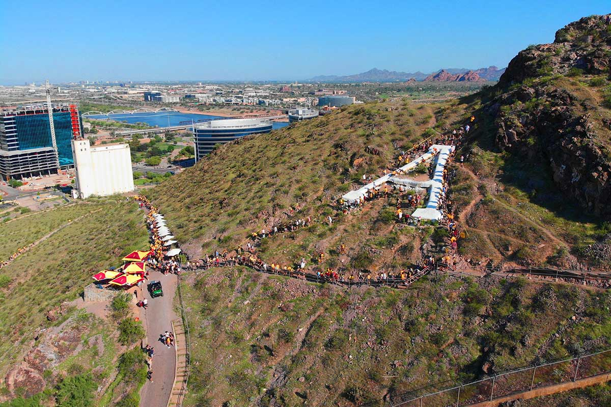
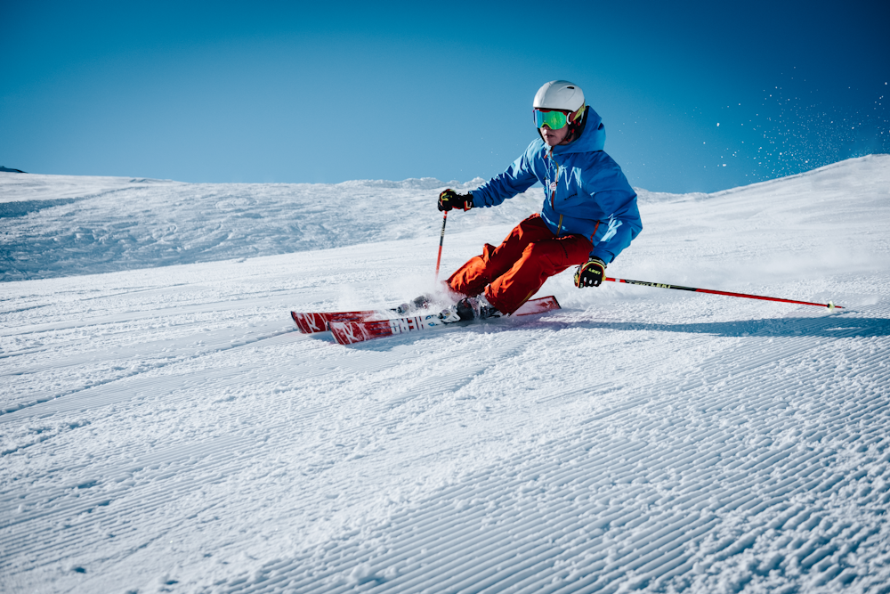

Discover breathtaking trails and connect with nature in your local area.
Explore TrailsWelcome to Local Hikes Hub, your ultimate guide to the best hiking trails nearby. Whether you're a seasoned hiker or just starting out, we provide detailed information, maps, and tips to make your outdoor adventures unforgettable. Hiking around this area offers stunning views of mountains, forests, and lakes, with trails for all skill levels. Join us in exploring the beauty of nature right in our backyard!

Distance: 5 miles | Difficulty: Moderate
Explore the iconic A Mountain with breathtaking views and challenging terrain.

Distance: 3 miles | Difficulty: Easy
Hike the famous Camelback Mountain for stunning desert landscapes and wildlife.
Have questions or suggestions? We'd love to hear from you!
Email: hello@localhikeshub.com